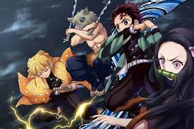

《鬼灭之刃》（日语：鬼滅の刃），简称《鬼灭》，是日本漫画家吾峠呼世晴所创作的奇幻漫画作品，描述主角炭治郎为了寻求让被变成鬼的妹妹复原的方法，踏上斩鬼之旅的和风刀剑奇谭。 于2016年2月15日至2020年5月18日在《周刊少年Jump》连载，全205话。漫画改编电视动画第一季“灶门炭治郎 立志篇”于2019年4月至9月播放，并于2020年10月16日上映续集电影《鬼灭之刃剧场版 无限列车篇》。 动画第二季“鬼灭之刃 游郭篇”预定于2021年播放。该漫画系列在Oricon公信榜的统计中为2020年日本国内最畅销漫画，年销量超过8000万册（仅有2020年为最畅销）。 截至2020年12月，漫画的累积发行量（含电子版）已达1.2亿册。
作者吾峠呼世晴于第70届（2013年4月）JUMP宝物新人漫画赏得奖作〈过狩り狩り猎〉是这部作品的前身,当时引起初代编辑片山达彦的注意. 这个故事发生在日本明治时代到大正时代,描绘了海外来的吸血鬼,日本的鬼和鬼猎人的战斗. 2015年,作者增加了“呼吸法”,“鬼杀队”设定拟定了初稿争取连载机会,但由于“世界观太严厉和主人公太沉默”遭打回票. 后来根据前辈的意见,作者修改部分设定创作了《鬼灭之刃》,成功连载.
设定 平安时代罹患绝症的青年鬼舞辻无惨，接受治疗后误以为疗程没效怒杀医生，却发现自己成为了“鬼”，虽具有超长寿命和强悍的身体能力，却必须以人为食，且有受日晒会死亡及接触紫藤花会中毒的弱点。 无惨希望找到医生药方的最后一味“蓝色彼岸花”完成治疗克服阳光，便制造许多手下，强大的鬼可发动异能“血鬼术”。而后建立了“十二鬼月”，由旗下实力最强大的十二只鬼组成，并分阶级为“上弦”和“下弦”，强度分别按数字排列。 千年前与鬼舞辻无惨同一族的产屋敷家族，因为出了无惨之孽种使全族遭咒，代代短命，后为了打倒无惨而组建了“鬼杀队”。战国时代鬼杀队一度将无惨逼入绝境，可惜未成功。 传至大正时代由第97代产屋敷耀哉率领，成员有数百名剑士，使用“日轮刀”与鬼对战，鬼杀队的等级区分为癸到甲，最高等级的称为“柱”。 卓越的剑士可以使用“呼吸法”，分为十余种流派，使用后能让身体能力大幅提升。所有呼吸法都是沿自于“日之呼吸”的分支。
大正时代，灶门炭治郎继承亡父留下的炭业工作，支撑一家七口，在山上过着朴实的生活。某日他做完生意返家后发现全家遭鬼王鬼舞辻无惨屠杀，而妹妹祢豆子变成了鬼。 鬼杀队富冈义勇见状后本欲斩杀祢豆子，但他在见识到兄妹俩的亲情后，推荐炭治郎拜鳞泷左近次为师。炭治郎经过两年训练，学会对抗鬼的呼吸法与剑术，通过考验加入鬼杀队。 炭治郎在接踵而来的任务中击败多个鬼，并首次接触鬼的首领，也是杀害自己全家的元凶──活了千年的无惨。炭治郎认识与无惨对立的鬼珠世，与她建立合作关系。 在结识同伴我妻善逸和嘴平伊之助后，他们前去蜘蛛山支援与下弦之伍的对战。炭治郎在苦战之际使出祖传的呼吸法“火之神神乐”，以及祢豆子觉醒的血鬼术一度扭转颓势，最终在义勇助阵下取胜。 由于长期违反队规带着身为鬼的祢豆子一同行动，炭治郎被押送往产屋敷耀哉的宅邸进行审判，他们被产屋敷认可。炭治郎等人在恢复后接受特训，后在于列车、花街、铸刀师之村的多场战斗中与十二鬼月对上。 尽管杀死多名十二鬼月成员，鬼杀队也折损数人。在铸刀师之村的战斗结束后，祢豆子克服了阳光，让无惨将目标转向祢豆子。无惨查出产屋敷宅邸的位置，造访该处并企图夺走祢豆子，却遭产屋敷以命相搏。 在连串围攻下，无惨中了珠世会将鬼变回人类的毒，他便启动手下的能力，将众人关进鬼的根据地“无限城”中。 鬼杀队成员和十二鬼月捉对厮杀，双方死伤惨重。在消灭了所有十二鬼月后，无惨杀死珠世并摆脱她的牵制，复活后与鬼杀队残存兵力展开决战，并展现出压倒性的实力。 炭治郎被无惨注入大量血液，濒临死亡之际见到自己的祖先炭吉观摩继国缘壹施展日之呼吸的景象，得知火之神神乐便是日之呼吸，同时领悟到击败无惨的方法便是串联日之呼吸的所有招式； 另一方面，无惨因珠世的毒而急速衰老弱化，又多次承受鬼杀队的攻击，后被黎明曙光逼上绝路。无惨一度夺取炭治郎的身体，但在祢豆子的感化和珠世遗留的药的作用下，炭治郎脱离掌控，变回人类。 无惨被消灭后，世上再无恶鬼，鬼杀队也从此解散。炭治郎与伙伴们回乡定居，他们的后代在现代日本过着和平美好的日子。